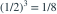

齐次泊松过程在(0,2]内恰有3次到达，最后一次到达时刻为T。给定该条件， 等于？
等于？
等于？- A

- B

- C

- D

我已思考，展开答案与解析
正确答案：B
- 给定三次到达，其时刻分布等同于3个独立U(0,2)变量的升序统计量。
- 最大时刻≤1当且仅当三次都在(0,1]内，概率

。
易错提醒有序时刻不是相互独立；可借助排序前的独立均匀变量计算。
Ross · 概率模型专题 · Ross第5.3.5节
按Ross教材公开目录所列知识主题原创；未逐字摘录原书习题。
查看参考来源
等于？
。Ross · 概率模型专题 · Ross第5.3.5节
按Ross教材公开目录所列知识主题原创；未逐字摘录原书习题。
查看参考来源